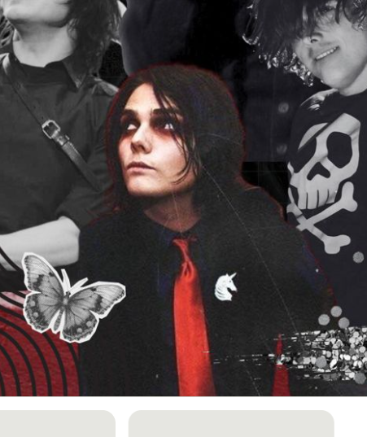

Música
Bandas, artistas, videoclips, eras visuales, tours o estética de fandom. Puede ir desde MCR y pop punk hasta K-pop o divas pop.
Archivo de referencias
Elige una referencia desde la música, el cine, las series o los musicales favoritos de Pochi. La idea no es copiar perfecto: es que el concepto se entienda y tenga intención.
Volver al dresscode

Cómo elegir
Bandas, artistas, videoclips, eras visuales, tours o estética de fandom. Puede ir desde MCR y pop punk hasta K-pop o divas pop.
Personajes, villanas, vampiros, teen movies, fantasía, clásicos románticos, terror elegante o cine de culto.
Brillo, teatro, canciones icónicas, personajes reconocibles y dramatismo suficiente para entrar como si se abriera el telón.